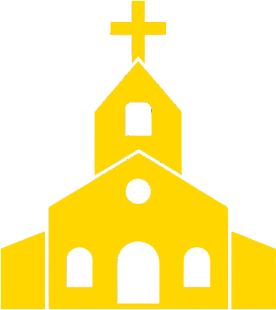
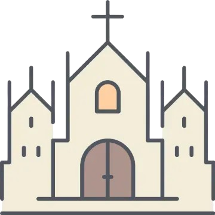

Filters Active
Show Churches List
Filter Churches
+
Church Name:
City:
Country:
Jurisdiction:
Type:
Rite:
Reset Filters
Zoom to Filtered Results
Loading churches...
Churches List
+
Loading churches...
Hide List
Legend
+

Basilica or Cathedral

Church or Shrine
Historic Church or Monument
+
🗑️
Filters
📋
Churches
🔎
Legend
📍
My Location
❌
Hide All Panels
Loading Catholic Churches Map
Loading data chunks...